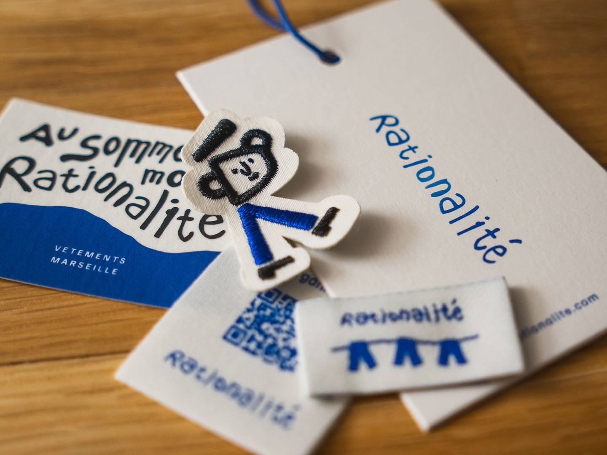
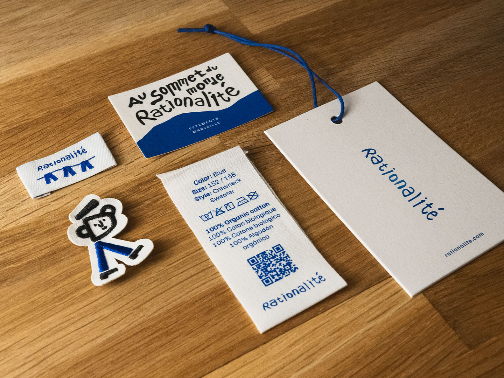
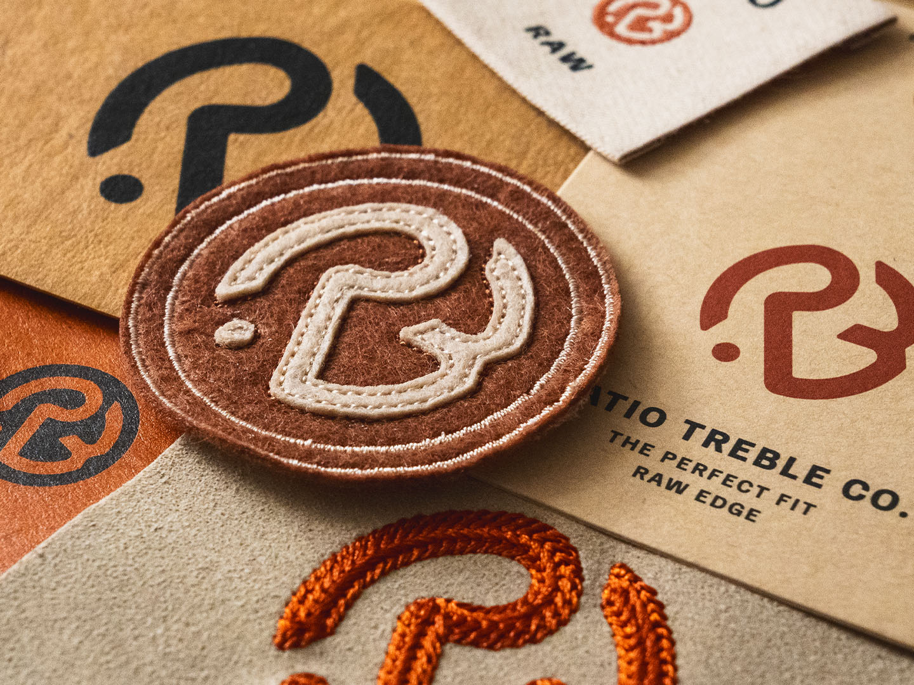
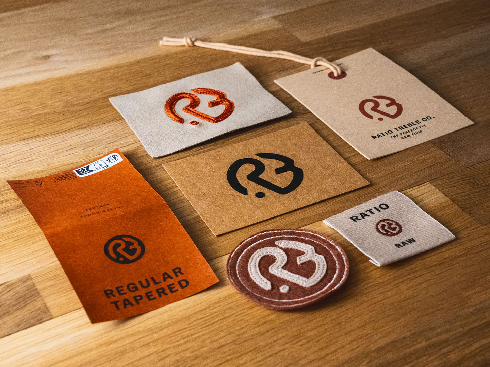

- Graphic design
I designed several series of trims and packaging items during my internship at Trimco Group. Two series of mine made it into the final collection. It was a great experience both to develop ideas and also see them come to life as well as selected for the final collection.
Final Collection


